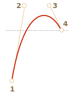

We need to choose the right Bezier curve for that animation. It should have y>1 somewhere for the plane to “jump out”.
y>1
For instance, we can take both control points with y>1, like: cubic-bezier(0.25, 1.5, 0.75, 1.5).
cubic-bezier(0.25, 1.5, 0.75, 1.5)
The graph:
